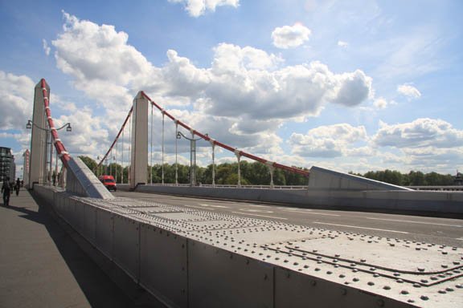
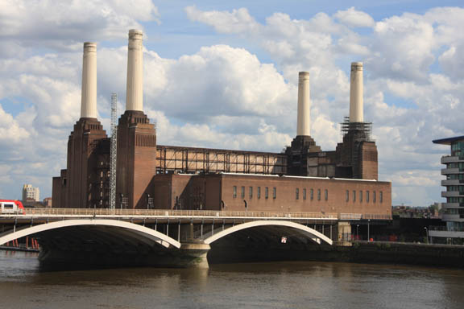
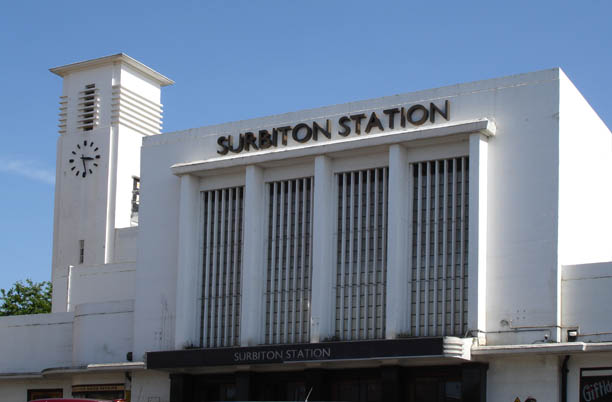
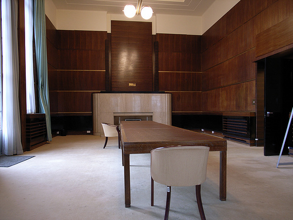
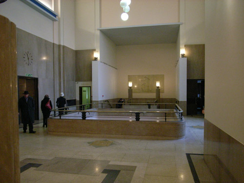

Albert Bridge, Chelsea.

Battersea Power Station.
Seen in the opening of the short stories as special graphics.

Surbiton Station is used here as 'Twickenham Station'. The rear view of the station was used in this episode, hence the clock tower appears on the other side. The station was designed by James Robb Scott and built in 1937 by Southern Railways.

The Royal Masonic Hospital, Ravenscourt Park W6 used as the 'Belgravia and Overseas Bank'. (Also used in 'Wasps' Nest' and 'Five Little Pigs').

View of the upstairs lobby.